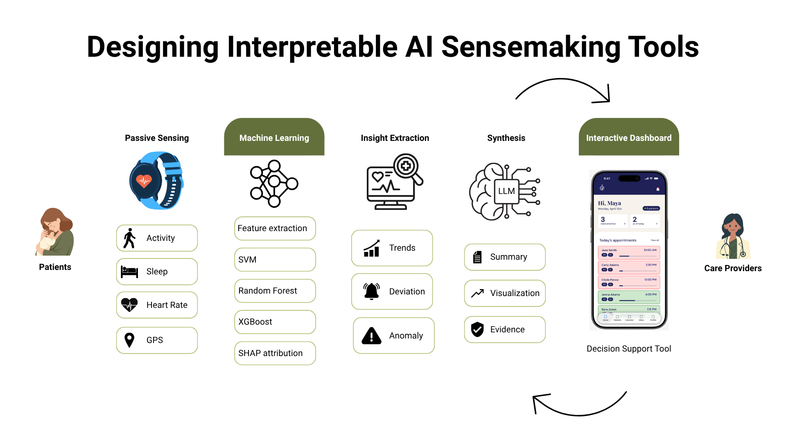
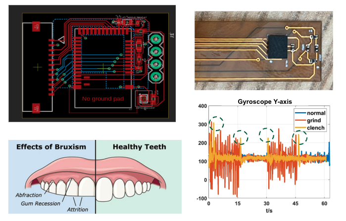
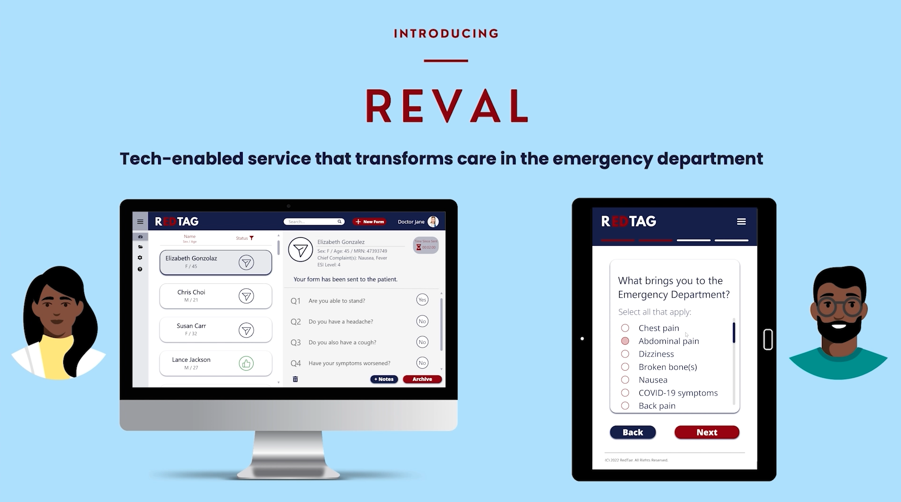
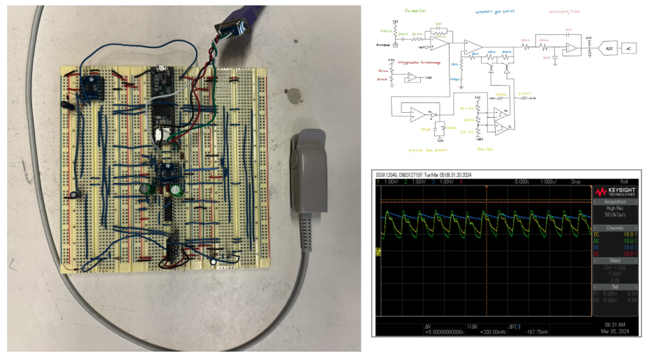
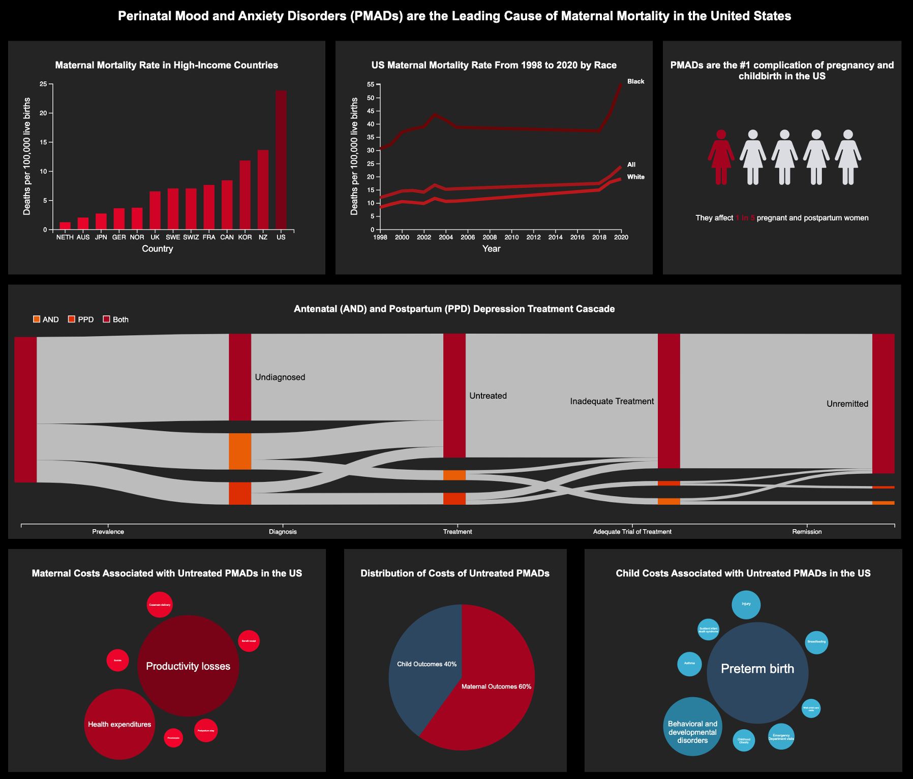

I am a current Engineering PhD candidate at Dartmouth College, advised by
Prof. Liz Murnane.
Prior to that, I earned my Master's in Engineering degree at Duke University, and my Bachelor of Science at Swarthmore College.
My research focuses on understanding the gap between what AI can predict from wearable data and what clinicians can act on,
with the goal of designing more effective human-AI collaboration in healthcare.
My thesis focus has been on AI-assisted sensemaking of multimodal wearable data, spanning personal mental health tracking, ML-based depression prediction in postpartum populations, and dashboard design for care providers.
I apply mixed-methods research grounded in scientific and epistemological rigor, combined with design synthesis, to build systems people can understand, question, and act on.
Experience
-
2022–now
Dartmouth College, HCI PhD candidate Elizabeth Murnane
-
2022–2023
FemTechnology Summit, Intern Oriana Kraft
-
2021–2022
Duke University, MEng in Biomedical Engineering Paul Fearis, Eric Richardson
-
2022
Siemens Healthineers, Global Business Development Intern Cam Atkins, Kelly Berchuck
-
Summer 2019
University of Pennsylvania, Undergraduate Student Researcher Charlotte Pfeifer, Michael Tobin, Dennis Discher
-
2017–2021
Swarthmore College, BS Engineering & BA French and Francophone Studies Vidya Ganapati, Matt Zucker, Carina Yervasi
Research

Projects



